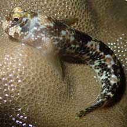
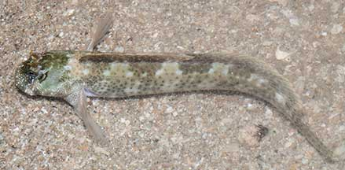
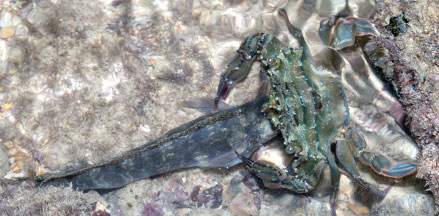
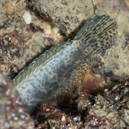

|
|
| fishes text index | photo index |
| Phylum Chordata > Subphylum Vertebrate > fishes > Family Blennidae |
| Rockskipper blenny awaiting identification Family Blenniidae updated Nov 2020 Where seen? This small elongated fish is sometimes seen hidden in crevices on encrusted rocks, seawalls and rubble, even out of water at low tide. Features: About 5cm to 11cm. Body elongated flattened sideways, head rounded. Various patterns from dark blobs to more defined bars along the body. *Species have not been identified. On this website, the animals are grouped by external features for convenience of display. |
 Kusu Island, Sep 19 Photo shared by Jesselyn Chua on facebook. |
 Black-spotted rockskipper blenny (Entomacrodus striatus) Kusu Island, Jun 15 Photo shared by Marcus Ng on flickr. |
 Rockskipper (Istiblennius sp.) ID by Yan Le, caught by a Blue swimming crab Small Sisters Island, Oct 25 Photo shared by Yan Le Su on facbeook. |
 Close up of fish caught. Small Sisters Island, Oct 25 Photo shared by Yan Le Su on facbeook. |
Small Sisters Island, Aug 2021 |
| Rockskipper blennies on Singapore shores |
On wildsingapore
flickr
|
| Other sightings on Singapore shores |
Links
References
|